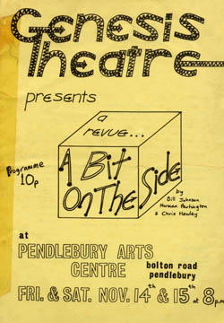

Chapter 17. A Bit on the Side
So, it was already November 1980 and in this particular year Genesis had done almost nothing of any repute. Therefore we decided to give Chris Hawley, Norman and Bill a second go at another comedy review, which they had already been working on. Anyway, we left them to it and ended up getting a panic call the week before the show was due to go on. (We had booked the Pendlebury Arts Centre for Friday and Saturday November 14th and 15th 1980). They weren't sure it was working, couldn't pull the material together properly, were having massive second thoughts and basically needed help.
 Chris Fogg stepped in and tried to pull it together. Unlike the first comedy review the material was noticeably poorer and more importantly nobody in the cast was laughing while we were rehearsing it; a sure sign that things were going very wrong. My own contribution, a tune called 'Micro-love' to words by Norman and Bill with a keyboard part in the style of 'Sparks (This Town Ain't Big Enough For the Both of Us)' was particularly naff and has been rightly forgotten by all concerned.
The dress rehearsal at the theatre the night before was diabolical. We then regretted that we had left it entirely up to Norman, Chris and Bill. So we reluctantly decided to cancel, but in the end an Act of God literally came to our rescue, as there was a horrendous thunderstorm that night. The roof of the theatre leaked, and all the lights and electrical equipment got thoroughly wet, so we had to put a sign up saying, 'Due to electrical failure at the theatre, we regretfully have to cancel'.
Good job we did! Nobody showed up anyway, apparently. So 1980 was a complete nonentity for us; a bad year all round.